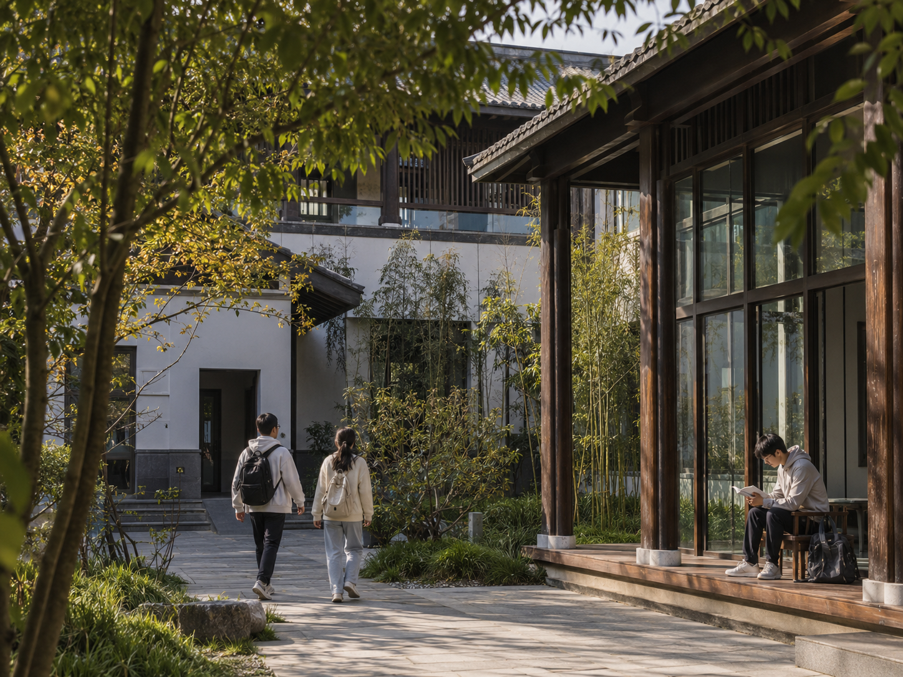
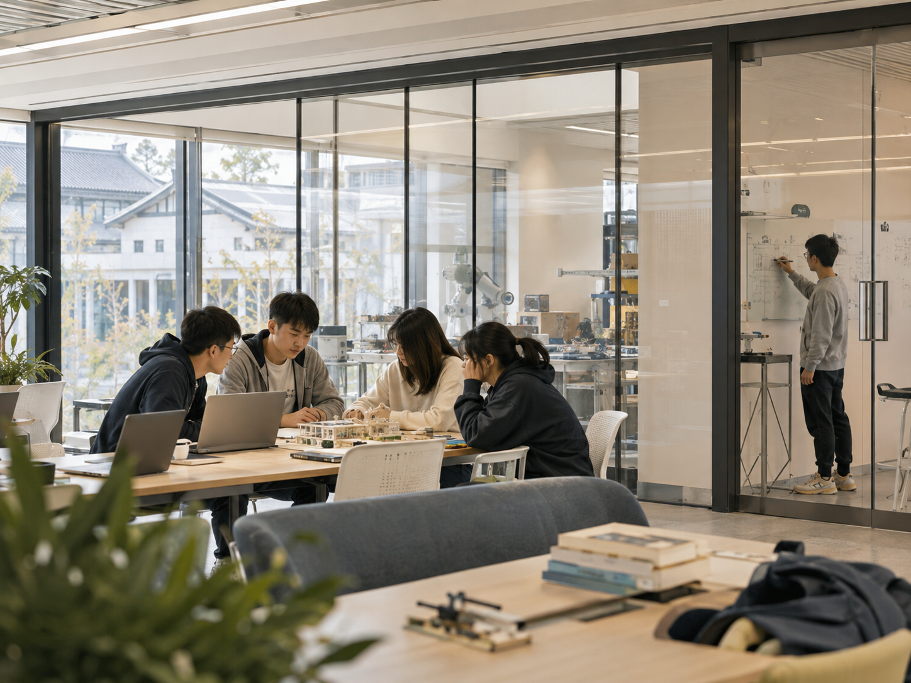
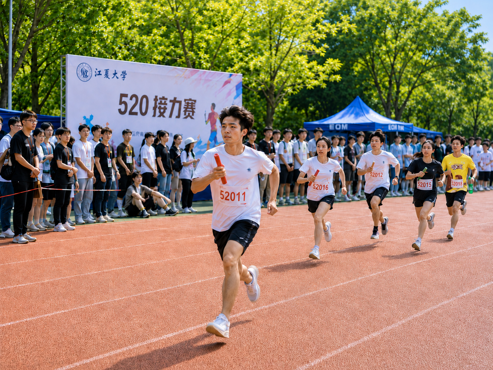
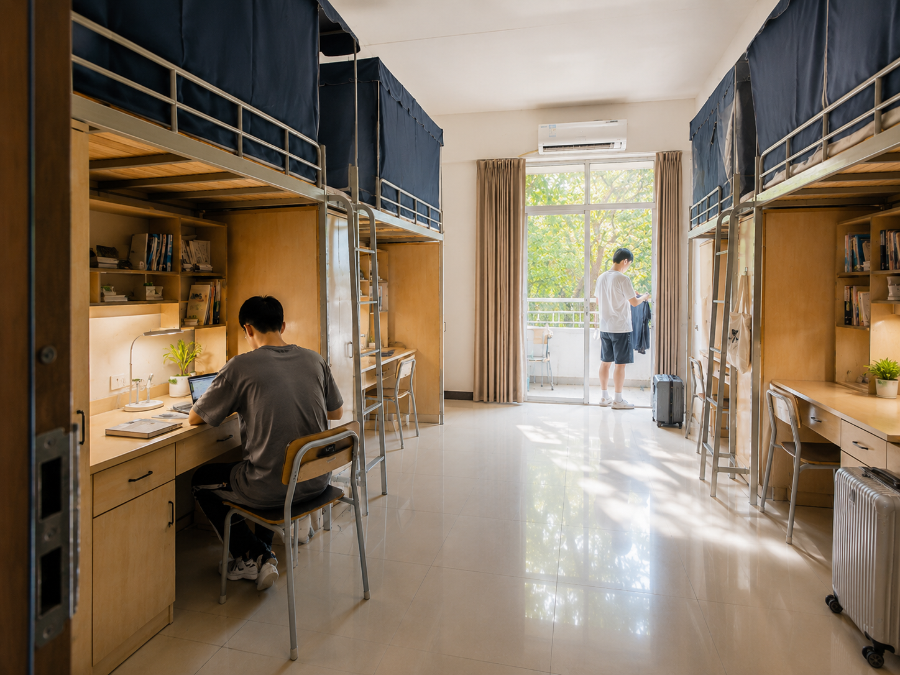

校园生活
跟随江江和小夏，了解书院、社团、科研实践与校园四季。

书院与社区
江江：来江夏，你最先走进的不是教室，是书院！
小夏：没错～咱们的书院和院系，每个都像一座小小的知识村落。你住的不是普通宿舍，是混专业、混年级的“融合社区”，能碰到很多人哦~
江江：推开宿舍门，隔壁住着学计算机的码农、学历史的书虫、学设计的画手，每个人都有不同的一技之长呢！
小夏：楼下还有自助厨房和有声自习室，半夜饿了煮泡面，期末周一起自习，很温馨呢~
江江：书院导师就住在同一栋楼，下午茶时间推门就能聊人生困惑。朋辈导师更贴心，选课避雷、恋爱烦恼，学长学姐都能帮你解答！
小夏：每学期还有江夏文化节，书院的大家也会积极帮助新人的哟~

科研与创新
江江：说个厉害的——江夏的本科生，大一起就能进实验室！
小夏：真的呢~“江海学者”计划专门给本科生配科研导师，想研究什么内容都有大佬带你哦~
江江：学校有三大交叉创新中心：未来城市、生命健康、数字人文，本科生也可以使用呢！
小夏：设备很充足哦~3D打印机、基因测序仪、虚拟演播棚……平时上课正常使用，课余申请了也能自己捣鼓喜欢的东西~
江江：每年秋天的“百川杯”科创大赛是重头戏，去年有学姐靠“可降解吸管新材料”拿下金奖，直接就能对接企业，很厉害呢~
小夏：就算没拿奖，参赛经历写简历上也很亮眼哦~科研小白别怕，咱们还有“启航计划”一对一带你入门，零基础也能慢慢上手～

社团与文化
江江：200多个社团，只有你想不到，没有你找不到！
小夏：辩论队舌战群儒、街舞社炸翻全场、汉服社把花朝节搬进校园、机器人社年年拿全国奖……
江江：还有小众宝藏社团！观鸟社背着望远镜满山跑，wota艺社研究荧光棒艺术，音游社各种街机好像有强身健体的功能……
小夏：想自己搞一个？拉上五个志同道合的小伙伴，填张表就能申请成立，学校还配备指导老师和启动经费，好多福利呢~
江江：每年都有江夏文化节，持续整整一个多月！话剧展演、微电影制作、文创市集、十佳歌手大赛……
小夏：还有520的接力赛呢~大家各自挥洒汗水，很有热情哟~就是不知道为什么最近跑完步都喜欢吃巧乐兹喝雪碧呢~
江江：也不要忘记我们的周边设计大赛哦！今年好像有同学设计了毛绒玩具和挂件，都非常可爱呢！

生活服务
江江：江夏人的一天，从食堂开始幸福！
小夏：八个食堂散落校园，川湘粤淮扬、日韩东南亚，连螺蛳粉窗口都有呢~五食堂的麻辣香锅是公认“排队王”，三食堂的烘焙坊现烤面包香飘十里～
江江：减肥党也有轻食窗口，过敏体质有专属窗口，清真餐厅独立操作，吃得安心！
小夏：深夜学习饿了？24小时无人智慧超市刷脸进，热乎便当、关东煮、零食饮料随时续命～
江江：生活配套也齐全：校医院科室完备，心理咨询室温馨私密，健身房年卡白菜价，恒温泳池全年开放！
小夏：快递站智能分拣，APP扫码秒取件；校内还有共享电动车，扫一扫就能骑，再也不用担心上课迟到了呢～
江江：最绝的是我们的宿舍！四人一间，独立卫浴，空间宽敞，每个人都有自己的隐私！空调暖气全覆盖，不管是冬天夏天都能舒适度过呢！
小夏：悄悄告诉你，符合功率规定的洗衣机和冰箱也可以在宿舍里配备哟~
